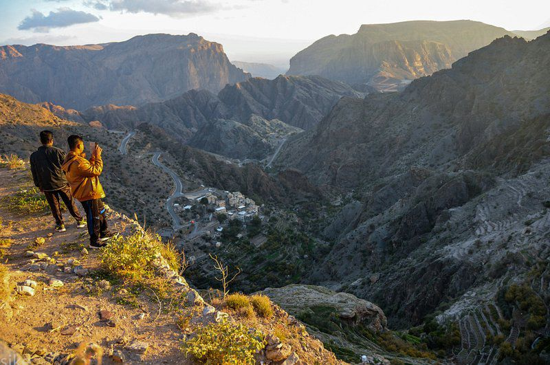

الأنشطة السياحية
تقدم منطقة سيق مجموعة متنوعة من الأنشطة التي تناسب جميع الأعمار والهوايات. من بين الأنشطة التي يمكن ممارستها:
- المشي لمسافات طويلة في الجبال والاستمتاع بالمشاهد الطبيعية الخلابة.
- القيام برحلات استكشافية بين القرى التقليدية والوديان.
- التصوير الفوتوغرافي للطبيعة، خاصة خلال فصلي الربيع والخريف.
- الاستمتاع بتجربة الزراعة وجني المحاصيل مثل الرمان والعنب.
أبرز المعالم السياحية
منطقة سيق تزخر بالمعالم التي تعكس جمال الطبيعة وسحر التراث. من أهم المعالم:
- المدرجات الزراعية الخلابة التي تزين الجبال.
- القرى التقليدية القديمة المبنية من الطين والحجر.
- وادي السيب: وادٍ رائع يتميز بالمياه الجارية والنباتات الخضراء.
- المساجد التاريخية التي تعكس الطراز العماني الأصيل.
صور من الأنشطة في سيق

صورة توضح جمال الأنشطة السياحية والطبيعية في منطقة سيق.